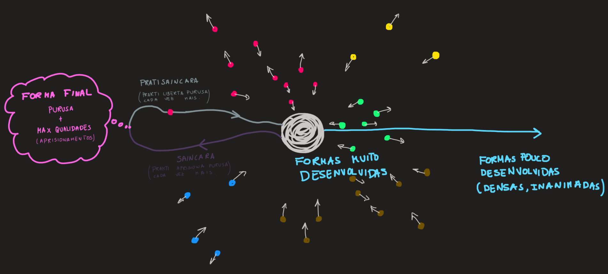

I.6
Prantisaincara é o movimento introversivo devido ao declínio dos gunas.
TLDR: A época de prantisaincara ocorre no micro-cosmos de todos os seres vivos pois estes pela sua experiência descobrem que são Consciência aprisionada. Daí surge-lhes o desejo de libertação (purusa quer libertação). Para a atingir, a força prakrti (caracterizada pelas duas gunas) tem de actuar no sentido de nos libertar.
Comentários + Resumo
A máxima qualificação da consciência ocorre no final da época de saincara e manifesta-se como matéria ao longo de todo o cosmos (nível macro-cósmico).
A matéria em todo cosmos pode ser particionada (de forma grosseira) em cinco fases:
solido
liquido
fogo
ar
etéreo
Nova Ideia: já sabíamos que na época de prantisaincara, prakrti (caracterizado pelas suas gunas) deixa progressivamente de qualificar (ou aprisionar) a consciência, aquilo que é novo neste sutram são dois aspectos:
O que é que causa isto?
É purusa que retira a liberdade a prakrti. Purusa é que muda a direcção (i.e. gunas) de prakrti. Recorda de I.5 que é o desejo de purusa em se auto-expressar que dá origem à época de saincara.
Como é que esta libertação se manifesta na prática?
A progressiva qualificação da consciência (saincara) ocorre a nível macro-cósmico, a progressiva desqualificação da consciência (prantisaincara) ocorre a nível micro-cósmico (individual). Para ser mais concreto eis a sequência de eventos de saincara + pratisaincara (ver I.3)
Noteelementos < matéria < ?! < bactérias < animais/plantas < macacos < ser humano lvl 1 < ser humano lvl 2 < \(\dots\) < Buda
Assim que surge nesta sequência, o ser humano, dotado de sua mente (citta), este é capaz de a libertar de prakrti. Por outras palavras, os objectos da consciência que estão presentes na nossa mente podem ser (à falta de melhor palavra) deleted. Na lista de objectos (ondas) que temos de remover, está o Ego (ver onda aham de I.4). Assim o nosso micro-cosmos deixa progressivamente de ter ondas e torna-se o mais liberto possível, tal como como a consciência nuclear (I.4).
É importante observar que não é o macro-cosmos que se liberta de prakrti, a matéria está continuamente a ser formada, pratisaincara apenas ocorre a nível individual. Ou seja, saincara ocorre a todo o momento, mesmo durante prantisaincara. Talvez seja mais claro dizer que cada subsistema do universo tem uma alternância entre saincara e prantisaincara, e que tal alternância não ocorre em simultâneo em todos os subsistemas. Enquanto saincara ocorre ao longo de todo o macro-cosmos (universo), prantisaincara apenas ocorre nos poucos seres vivos (sistemas) que habitam.
Pergunta: A passagem de matéria para os seres vivos é um salto que o autor não clarifica. Será que há interversão que qualquer forma de inteligência?
Resposta: Não se sabe…
Este sutram resume-se na seguinte figura, cada ponto é um subsistema:

Saincara e prantisaicara estão ambas presentes ao longo do tempo, alguns subsistemas estão na época de saincara outros em prantisaicara.
Terminologia:
Pratisaincara - fase centrípeta (em direcção ao centro/núcleo) ou sintética da evolução de um ser vivo.
vidyamaya = força que nos confere conhecimento, assim é também designada prakrti a actuar no nosso micro-cosmos; prakrti não confere conhecimento à matéria inanimada donde neste caso usamos simplesmente a palavra prakrti.
vidya = força que revela a Consciência, a verdadeira natureza da realidade (sinonimo de vidyamaya)
Jiivatma = eu individual, alma; ilusão segundo os filósofos budistas.
Entendo [eu individual] como o conjunto de ondas que nos caracterizam, i.e., a nossa mente e corpo. Prakrti qualificou/amarrou/aprisionou parte do oceano de consciência (purusa) para que o [eu individual] exista. Assim que está aprisionada consegue ver actuar no mundo (aham, mahat de I.4) donde resulta uma progressiva descoberta da sua verdadeira natureza, ou seja, que é Consciência (purusa) aprisionada. E daqui resulta o nosso impulso para a libertar. Nota como é fundamental observar e experienciar a realidade enquanto prisioneiros, para depois descobrirmos que somos prisioneiros e assim surgir o desejo de liberdade - é assim que prakrti (certa combinação de três gunas) nos direccionada durante prantisaincara, não no sentido de nos aprisionar mais, mas sim de nos libertar (aquilo a que no sutram se chama de declínio das gunas).
Actividades como coordenação do corpo (asanas), energia vital (?) e trabalho da mente (meditação, yama e niyama) são métodos de libertação. Fazê-mo-los pelo desejo de libertação (causado ao descobrirmos que somos prisioneiros). E são exemplos concretos da manifestação de prakrti.
Pergunta: Que outros exemplos de prakrti (em prantisaincara) conseguimos encontrar?
Resposta: Entanglement vs Envolvimento …